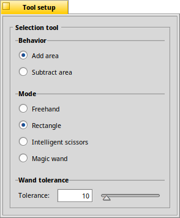

|  |
Normally, consecutive selections are added together. However, holding OPT will substract instead.
By the way, more selection related commands are in the Selection menu of the main window, amongst those are items to selections.
There are several modes available:
lets you draw an arbitrary area. / selects in the shape of a rectangle/ellipse.
Similar to the Rectangle or Ellipse tools, holding SHIFT creates a square/circular selection, ALT switches to center-to-corner mode. tries to select along detected edges. You move the mouse along the edge of the object you want to select. The detected edge is drawn as a grey line; you left-click to confirm the selection made so far and the line becomes a black & white "ant-line". You continue like this until the object is completely circled. Finally you double-click to complete the selection. chooses all pixels of a similar color. You set the for what's considered 'similar' with the slider below.
The quick key to choose the selection tool is S.
|